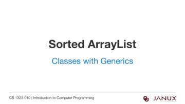
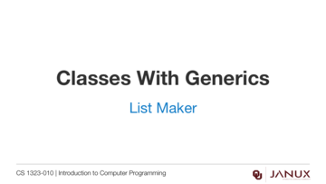

Classes with Generics
This section covers classes with generics.
Introduction to using the ArrayList class.
Java code developed in the videos from this lesson.
Lecture presentation
Lecture presentation

